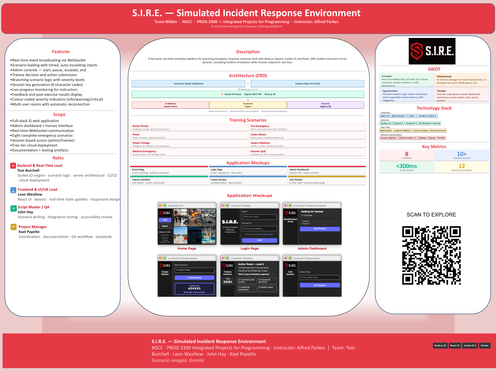
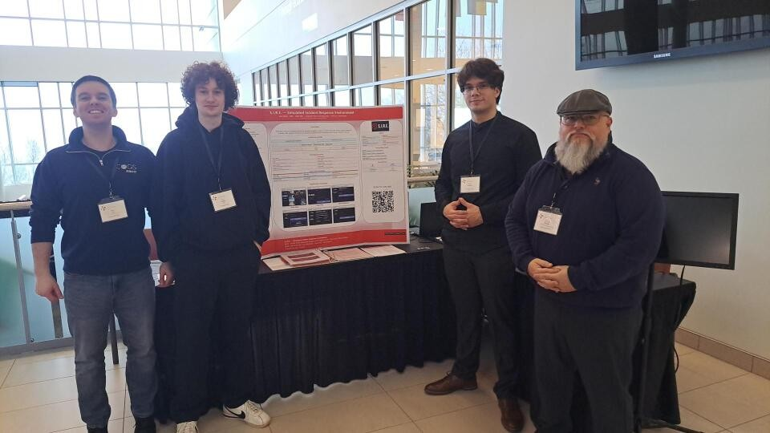
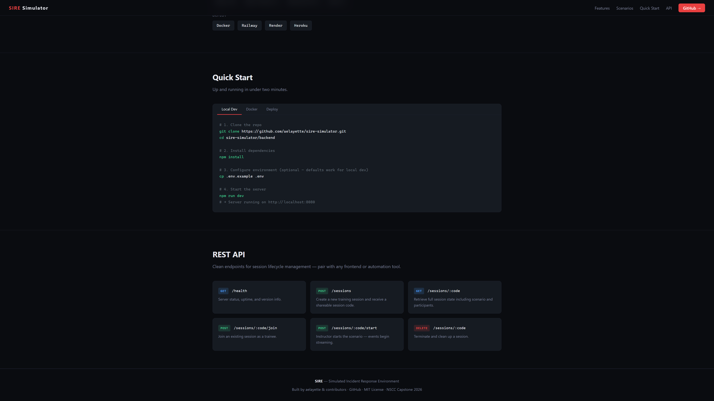

S.I.R.E.
Structured Incident Response Engine — real-time, multi-user simulation platform
At a Glance
Status
Prototype / In Progress
Timeline
Jan 2026 – present
Team Size
4 people
My Role
Repo owner · Docs · Jira · Coord.
Platform
Web (browser-based)
Live Demo
Tech Stack
Project Overview

One-page technical overview presented at the NSCC IT showcase.
S.I.R.E. (Structured Incident Response Engine) is a real-time, browser-based simulation platform that lets teams practise structured incident-response procedures in a controlled, multiplayer environment. It was built as a capstone project by a four-person team and presented at the 2026 NSCC IT Showcase.
The platform connects multiple users through WebSocket rooms, assigns roles, and walks participants through simulated incident scenarios with live state updates shared across all connected clients.
Problem & Goal
Incident response training often relies on static documentation or expensive in-person drills. Our goal was to create an accessible, browser-based simulation where teams could practice realistic response workflows together — in real time, from any machine.
My Contributions
On a four-person team, every role matters. Here is what I owned:
Architecture & Technical Approach
Frontend
Built with React + Vite for fast iteration. MUI (Material UI) provided a consistent component library, and React Router handled client-side navigation between the lobby, scenario selection, and active simulation views.
Backend
A Node.js + Express server (written in ESM) manages session state in memory and acts as the source of truth for all scenario data. Socket.IO powers the real-time layer using WebSocket Secure (WSS) connections, with namespaced rooms isolating each simulation session so teams don't interfere with one another.
DevOps & Deployment
The application is containerised with Docker for environment consistency. Deployment is managed through a cloud provider (Render or Railway), with the frontend static build hosted separately. Source control and CI workflows run through GitHub.
Evidence Gallery
Screenshots and photos from development and the NSCC Showcase.
Replace placeholder cards by adding image files to assets/img/projects/sire/.

Our four-person team presenting S.I.R.E. to industry guests at the 2026 NSCC IT Showcase.
Proves: Teamwork · Communication · Delivery
Main entry screen for the S.I.R.E. simulation platform.
Proves: UI Design · Real-time Connectivity
Users enter a room code to join an active simulation session.
Proves: Socket.IO Integration · State ManagementOne-page technical poster created for the NSCC showcase audience.
Proves: Documentation · CommunicationChallenges & What I Learned
Coordinating a four-person team
Communication overhead was real. I learned that clear PR templates, a shared branching convention, and brief but consistent standups were more effective than any single tool. Small process investments paid off quickly.
Documentation as a technical skill
Writing the poster, comms plan, and project documents forced me to articulate the architecture in plain language — which surfaced design gaps earlier than code review alone would have. Good documentation is not an afterthought; it shapes how the project is understood by everyone involved.
Results & Next Steps
- Successfully shipped and demonstrated at the 2026 NSCC IT Showcase
- Live demo remains publicly accessible at the project URL
- Received positive feedback from industry guests on real-time responsiveness
Next improvements
- Persistent scenario logs (database-backed, rather than in-memory)
- Instructor dashboard for managing multiple concurrent sessions
- Expanded scenario library with branching decision trees
- Unit and integration test coverage on the Socket.IO event layer